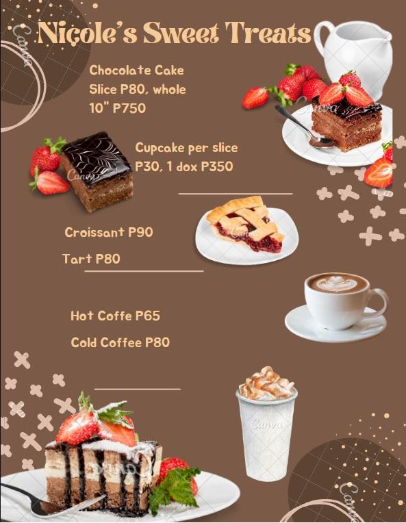

Nicole's Sweet Treats
Making Sweet Things Happen
Menu
Nicole's Sweet Treats

Gallery Nicole's Sweet Treats
Know more about Nicole's Sweet Treats
The bakeshop is run by Nicole Mission since 2017. It started when she quit her corporate job and decided to start her own business and be a successful business woman. She borrowed money from her family and friends to start her pastry business which soon became the talk of the town and successful in less than a year. Nicole’s Sweet Treats is a specialty cakes and pastry shop located at the ground floor in SM Consolacion near the main entrance. The store’s business hours are from 9 am to 10 pm. In 2019, the shop decided to offer hot and cold coffee as well. The shop is known for their freshly brewed coffee and oven fresh pastries. They use the freshest and organic coffee grounds that are locally produced in the foothills of Mt. Kanlaon, Negros Occidental. The shop is also known for their delectable and sumptuous cakes and pastries at a reasonable price. They have a yearly charity drive wherein they give free coffee and pastry to jeepney and bus drivers all over the metro.
In 2019, the shop decided to offer hot and cold coffee as well. The shop is known for their freshly brewed coffee and oven fresh pastries. They use the freshest and organic coffee grounds that are locally produced in the foothills of Mt. Kanlaon, Negros Occidental. The shop is also known for their delectable and sumptuous cakes and pastries at a reasonable price. They have a yearly charity drive wherein they give free coffee and pastry to jeepney and bus drivers all over the metro.
Book NowNicole's Sweet Treats Core Values
1. Real Human Connection: We aim to bring family, friends, and loved ones closer together. Get out from your bed, go out, put down your phone, and talk about how your day was.
2. Safety: We ensure the health and well-being of all employees and customers. We create a safe work environment.
3. Accountability: We acknowledge and accept responsibility for actions, products, and decisions.
4. Commitment: We are committed to providing opportunities for employees to grow personally and professionally while consistently providing products of exceptional quality and an outstanding customer service experience.
5. Integrity: We provide honest, timely communication and service that shows respect and kindness with every customer and employee.
6. Teamwork: We strive to create a positive work environment by building a cooperative effort among individuals and departments; realizing our success depends on our ability to perform as one successful team.
7. Positivity: We do not ignore negatives, instead, we choose positivity as our base and way of looking at what needs fixing.
8. Improvements: We continuously improve and innovate in pursuit of excellence.
9. Community: We actively support our community by donating our product and time to the neighborhoods and families we serve.
10. Unique: We stay true to who we are and what we’re perfectly wired to do. We free ourselves to follow our own path by not becoming distracted with what others are doing.
Book Now